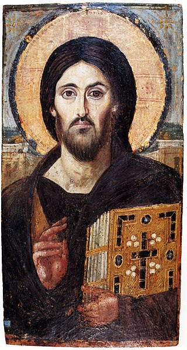

พระคริสต์
พระคริสต์[3] (อังกฤษ: Christ; กรีก: Χριστός, คริสตอส;) ในศาสนายูดาห์เรียกว่าพระเมสสิยาห์[4] หมายถึง ผู้ได้รับเจิม ในคัมภีร์ไบเบิลภาคพันธสัญญาใหม่ใช้คำนี้เป็นสมัญญานามของพระเยซู[5]
คริสต์ศาสนิกชน หรือ คริสตชน คือผู้ที่เชื่อว่าพระเยซูเป็นพระคริสต์หรือพระเมสสิยาห์ที่ถูกทำนายไว้ในคัมภีร์ฮีบรู ดังนั้นชาวคริสต์จึงมักเรียกพระเยซูว่า พระเยซูคริสต์ ซึ่งหมายถึง พระเยซูผู้ได้รับเจิม ในปัจจุบันคำว่าพระคริสต์จึงใช้หมายถึงพระเยซูชาวนาซาเรธไปโดยปริยาย[6]
ศาสนายูดาห์ไม่เคยยอมรับว่าพระเยซูเป็นพระเมสสิยาห์[7] (แม้แต่พระวรสารในสารบบคัมภีร์ไบเบิลก็กล่าวถึงเรื่องชาวยิวปฏิเสธพระเยซู) แต่คริสต์ศาสนิกชนก็ยังเชื่อว่าพระเยซูเป็นพระคริสต์และจะเสด็จมาอีกครั้งในการพิพากษาครั้งสุดท้าย
การใช้คำว่า "คริสต์" เพื่อหมายถึงพระเยซูโดยเฉพาะยังปรากฏในชื่อสาขาวิชา เช่น เทววิทยาศาสนาคริสต์ คริสตวิทยา ซึ่งเป็นวิชาที่เน้นศึกษาธรรมชาติและสถานะบุคคลของพระเยซูตามที่ปรากฏในพระวรสารในสารบบและบทจดหมายต่าง ๆ ในพันธสัญญาใหม่